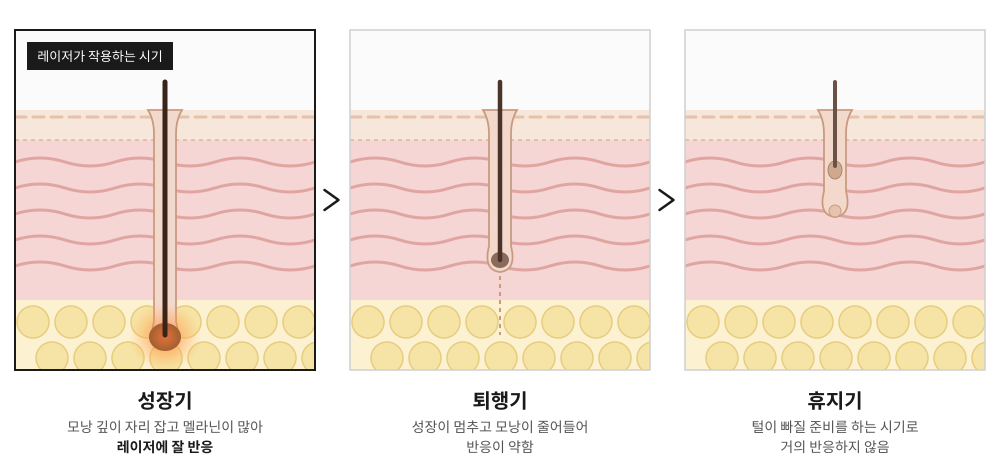

755nm
알렉산드라이트
멜라닌에 잘 흡수되는 파장으로, 비교적 밝은 피부와 가늘고 옅은 털에도 반응이 좋습니다.
이런 경우에 · 얼굴 솜털, 가늘고 옅은 털
홈 > 피부미용 > 제모
경산 하양 갈창림한의원, 두 가지 파장으로 털과 피부에 맞춰 설계하는 레이저제모
LASER HAIR REMOVAL
레이저제모는 '선택적 광열분해'라는 원리로 작동합니다. 특정 파장의 레이저 빛이 모낭 속 검은 멜라닌 색소에만 흡수되어 열로 바뀌고, 이 열이 모낭과 모근에 전달되면서 털이 다시 자라는 힘이 약해집니다.
갈창림한의원은 755nm 알렉산드라이트와 1064nm 엔디야그, 두 가지 파장을 갖춘 듀얼 악센토N을 사용합니다. 털과 피부 타입에 맞는 파장을 골라 더 정밀하게 시술합니다.
같은 제모라도 털과 피부에 따라 파장과 에너지가 달라야 합니다.

HAIR CYCLE
털은 성장기, 퇴행기, 휴지기를 반복합니다. 레이저는 이 가운데 성장기에 있는 모낭에만 잘 작용하는데, 한 시점에 성장기인 털의 비율은 부위마다 달라 팔·다리는 약 20%, 겨드랑이는 약 30%, 인중·턱처럼 얼굴 털은 60~70% 정도로 알려져 있습니다.

털이 성장기부터 휴지기까지 한 바퀴 도는 데 약 6개월이 걸립니다. 4주 간격으로 6회 시술하면, 이 한 바퀴 동안 차례로 성장기에 들어오는 모낭을 빠짐없이 만날 수 있습니다.
가늘고 옅은 털은 1사이클로도 변화를 느끼실 수 있고, 굵고 진한 털은 2~4사이클이 필요한 경우가 많습니다.
EQUIPMENT
털과 피부 타입에 맞는 파장을 골라 사용합니다.
755nm
멜라닌에 잘 흡수되는 파장으로, 비교적 밝은 피부와 가늘고 옅은 털에도 반응이 좋습니다.
이런 경우에 · 얼굴 솜털, 가늘고 옅은 털
1064nm
더 깊이 들어가는 파장으로, 피부 표면의 멜라닌 영향을 덜 받아 어두운 피부톤이나 굵고 깊은 털에 사용합니다.
이런 경우에 · 겨드랑이·다리의 굵은 털, 어두운 피부톤
두 파장과 다양한 스팟 크기, 설정 조합으로 얼굴의 가는 솜털부터 다리·겨드랑이의 굵은 털까지 부위와 털의 특성에 맞춰 시술합니다.
COOLING
레이저가 조사되는 순간 모낭뿐 아니라 피부 표면에도 열이 생깁니다. 이 열을 얼마나 정교하게 식히느냐에 따라 통증과 피부 부담, 안전하게 쓸 수 있는 에너지가 달라집니다.
| 쿨링 방식 | 식히는 방법 |
|---|---|
| 접촉식 | 차가운 팁이 시술 부위에 직접 닿아 온도를 낮춥니다. |
| 에어 방식 | 차가운 바람을 쏘아 피부를 식히며, 냉각 시간을 조절할 수 있습니다. |
| 가스 분사식 (악센토N) | 레이저가 나가기 직전 냉각 가스를 짧게 분사해, 펄스마다 타이밍을 맞춰 표피만 정확하게 보호합니다. |
PROCESS
CAUTION
※ 필요한 시술 횟수와 효과는 부위와 털의 특성, 피부 상태에 따라 개인차가 있습니다.
FAQ
털은 보통 6개월 정도에 걸쳐 성장기·퇴행기·휴지기를 한 바퀴 돕니다. 그래서 4주 간격 6회를 1사이클로 안내해 드립니다. 가늘고 옅은 털은 1사이클로도 변화를 느끼실 수 있지만, 굵고 진한 털은 모낭이 많고 재생력도 강해 2~4사이클이 필요한 경우가 많습니다. 정확한 횟수는 상담 시 확인해 드립니다.
악센토N은 조사 전후로 냉각 가스가 분사되는 Pre & Post 쿨링을 갖추고 있어, 마취 없이도 통증 부담이 비교적 적은 편입니다. 다만 부위와 개인의 통증 민감도에 따라 차이가 있습니다.
가능합니다. 다만 태닝을 했거나 자외선 노출이 많았던 직후에는 색소침착 위험이 높아질 수 있어, 시술 전후로 자외선 차단에 특히 신경 써 주세요.
면도는 괜찮습니다. 다만 털을 뽑거나 왁싱하면 레이저가 작용해야 할 모낭까지 함께 빠지기 때문에, 시술 기간에는 피해 주세요.
가능합니다. 가늘고 옅은 털은 레이저 반응이 약한 편이라, 파장과 에너지, 조사 시간을 더 정밀하게 맞춰 시술합니다.